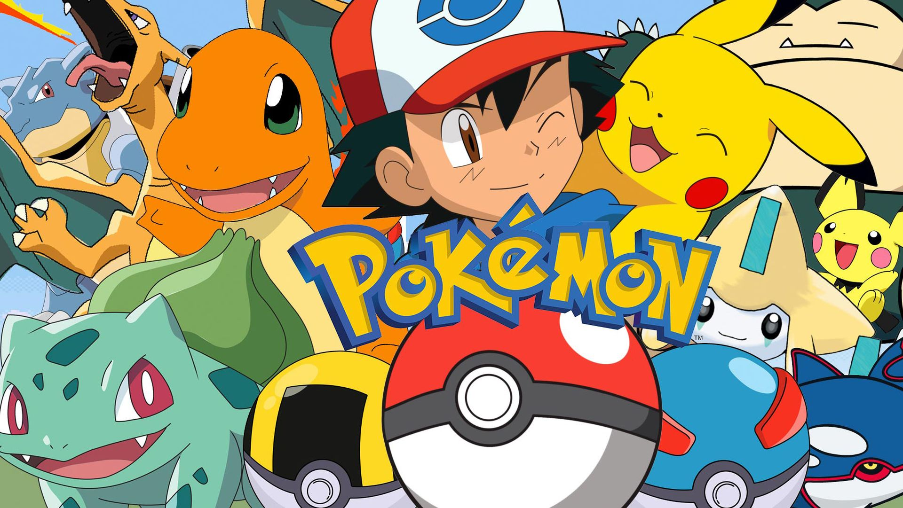

Eres fan de Pokémon y te encantan los combates? En Pokémon Stadium disfruta compitiendo contra otros entrenadores y sus Pókemon. ¡Demuestra que eres el mejor en esta experiencia 3D!
Pokémon es una franquicia de videojuegos, animé y cartas exitosa a nivel mundial. Nos presentan un mundo donde los Pokémon, criaturas de variadas formas, tamaños y naturalezas conviven con los humanos. En este mundo los entrenadores son personas que se dedican a completar entrenar a un equipo poderoso con los Pokémon que han atrapado y así poder luchar en gimnasios y finalmente ganar la Liga Pokémon, haciéndose con el título de Campeón Regional.
En esta edición centrada en le combate, luchas para convertirte en el campeón del estadio. Puedes luchar contra otros entrenadores, contra lideres de gimnasio de la primera generación o jugar los divertidos minijuejos con hasta cuatro de tus amigos.
En Pokémon Stadium están disponibles todos tus Pokémon favoritos de la primera generación y con la capacidad de usar Transfer Pak puedes transferir tu equipo desde las ediciones Rojo, Azul y Amarillo. En Pokémon Stadium 2 puedes transferir desde las ediciones Oro, Plata y Cristal.
Review
La saga de Pokémon es de los primeros videojuegos que recuerdo haber jugado, asi que le guardo un cariño lleno de nostalgia, en especial a las batallas, nunca fui muy bueno para estar subiendo los xp de mis Pokémon y quería llegar rápido a los gimnasios para luchar. En Pokémon Stadium encontré esta especialidad en batalla que siempre quise en un juego de la franquicia.